대기환경기사 (2013-09-28 기출문제)
1과목: 대기오염 개론
1. 역전에 관한 설명으로 가장 거리가 먼 것은?
- 복사역전은 눈이 덮인 지역의 경우 눈의 알베도가 0.8보다 더 크고, 태양에서의 복사열전달이 최소가 되기 때문에 오전의 복사역전 현상이 연장되는 경향이 있다.
- 복사역전은 해뜨기 직전 및 하늘이 맑고 바람이 약할 때 아주 강하다.
- 침강역전은 배출원보다 낮은 고도에서 발생하므로 일반적으로 단기간 오염물질에 크게 기여한다.
- 일반적으로 가을과 겨울은 역전의 기간이 길고, 자주 발생한다.
(정답률: 64%)

2. Pasquill은 확산 추정시 변동 측정법을 추전하였으며, 광범위한 추정에 필요한 기상자료를 이용하여 확산의 계획안을 제출하였는데, 이 때 필요한 변수와 가장 거리가 먼 것은?
- 풍속
- 습도
- 운량
- 일사량
(정답률: 76%)
3. 열기배출 형태 중 원추형(coning)에 관한 설명으로 가장 적합한 것은?
- 대기가 불안정하여 난류가 심할 때 발생한다.
- 대기가 중립조건일 때 잘 발생하며, 이 연기내에서는 오염의 단면 분포가 전형적인 가우시안 분포를 나아낸다.
- 대기가 매우 안정한 상태일 때 아침과 새벽에 잘 발생하며, 풍향이 자주 바뀔 때면 사행하는 연기 모양이된다.
- 고, 저기압에 상관없이 발생하며 두 역전층 사이에서 오염물질이 배출될 때 발생한다.
(정답률: 75%)
4. 유효굴뚝높이 200m인 연돌에서 배출되는 가스량은 20m3/sec, SO2농도는 1750ppm 이다. ky=0.07, kz=0.09인 중립 대기조건에서의 SO2의 최대 지표농도(ppb)는? ( 단, 풍속은 30m/s이다.)
- 34ppb
- 22ppb
- 15ppb
- 9ppb
(정답률: 63%)
5. Richardson 수(R)에 관한 설명으로 옳지 않은 것은?
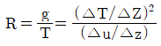
로 표시하며, △T/△Z는 강제대류의 크기, △u/△z는 자유대류의 크기를 나타낸다.- R ＞0.25 일때는 수직방향의 혼합이 없다.
- R = 0 일때는 기계적 난류만 존재한다.
- R 이 큰 음의 값을 가지면 대류가 지배적이어서 바람이 약하게 되어 강한 수직운동이 일어나며, 굴뚝의 연기는 수직 및 수평방향으로 빨리 분산한다.
(정답률: 82%)
6. 대기오염물질의 분류 중 1차 오염물질이라 볼 수 없는 것은?
- 금속산화물
- 일산화탄소
- 과산화수소
- 방향족 탄화수소
(정답률: 63%)
7. 실내공기오염물질 중 석명의 위험성을 점점 커지고 있다. 다음 설명하는 석면의 분류에 해당 하는 것은?
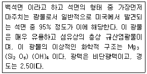
- Chrysotile
- Antigorite
- Lizardite
- Orthoantigorite
(정답률: 78%)
8. 빛의 소멸계수(Oext) 0.45km-1인 대기에서, 시정거리의 한계를 빛의 강도가 초기 강도가 초기 강도가 초기 강도의 95%가 감소했을 때의 거리라고 정의할 때, 이 때 시정거리 한계는? (단, 광도는 Lambert-Beer 법칙을 따르며, 자연대수로 적용)
- 약 12.4km
- 약 8.7km
- 약 6.7km
- 약 0.1km
(정답률: 66%)
9. 다음 물질의 특성에 대한 설명중 옳은 것은?
- 탄소의 순환에서 탄소(CO2로서)의 가장 큰 저장고 역할을 하는 부분은 대기이다.
- 불소는 주로 자연 상태에서 존재하며, 주관련 배출 업종으로는 황산 제조공정, 연소공정 등이다.
- 질소산화물은 연소 전 연료의 성분으로부터 발생하는 fuel NOx와 저온연소에서 공기 중의 질소와 산소가 반응하여 생기는 thermal NOx 등이 있다.
- 염화수소는 플라스틱공업, PVC소각, 소다공업 등이 관련배출 업종이다.
(정답률: 67%)
10. 다음 오염물질과 주요 배출관련 업종의 연결로 가장 거리가 먼 것은?
- 납 – 건전기 및 축전지, 인쇄, 페인트
- 구리 – 제련소, 도금공장, 농약제조
- 페놀 – 타르공업, 화학공업, 도장공업
- 비소 – 석유정제, 석탄건류, 가스공업
(정답률: 69%)
11. 다음 특정물징 중 오존파괴지수가 가장 낮은 것은?
- CF2BrCI
- CCI4
- C2H3CI3
- C2F5CI
(정답률: 53%)
12. 지상의 점오염원 (He=0)으로부터 바람부는 방향으로 400m 떨어진 연기의 중신선상에서의 지상 (z=0) 오염농도는? (단, 오염물질 배출량은 10g/s, 풍속은 5m/s, Oy와Oz는 각각 22.5m와 12m이고, 농도계산식은 가우시안 모델을 적용)
- 0.85 mg/m3
- 1.55 mg/m3
- 2.36 mg/m3
- 3.56 mg/m3
(정답률: 72%)
13. 역사적 대기오염사건에 관한 설명으로 옳은 것은?
- 포자리카 사건은 MIC에 의한 피해이다.
- 도쿄 요꼬하마 사건은 PCB가 주오염물질 작용했다.
- 런던스모그 사건은 복사역전 형태였다.
- 뮤즈계곡 사건은 PAN이 주된 오염물질로 작용한 사건이었다.
(정답률: 83%)
14. 다음은 탄화수소류에 관한 설명이다. ( )안에 가장 적합한 물질은
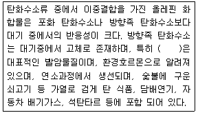
- 벤조피렌
- 나프탈렌
- 안트라센
- 톨루엔
(정답률: 84%)
15. 최대혼합 고도를 500m로 예상하여 오염농도를 3ppm으로 수정하였는데, 실제관측된 최대 혼합고는 200m였다. 실제 나타날 오염농도는?
- 26ppm
- 47ppm
- 55ppm
- 67ppm
(정답률: 68%)
16. 도시 대기오염물질 중에서 태양빛을 흡수하는 아주 중요한 기체 중의 하나로서 파장 0.42mm 이상의 가시광선에 의해 광분해 되는 물질로서 대기 중 체류시간은 2~5일 정도인 것은?
- RCHO
- SO2
- NO2
- CO2
(정답률: 76%)
17. 표준상태에서 SO2 농도가 1.28g/m3이라면 몇 ppm 인가?
- 약 250
- 약 350
- 약 450
- 약 550
(정답률: 75%)
18. 식물의 잎에 회백색 반점, 잎맥 사이의 표백, 백화 현상을 일으키며, 쥐당나무, 까치밤나무등은 강한 편이고, 지표식물로는 보리, 담배 등인 대기오염물질은?
- SO2
- O3
- NO2
- HF
(정답률: 68%)
19. 다음 중 불화수소(HF)의 주료 배출관련 업종으로 가장 적합한 것은?
- 가스공업, 펄프공업
- 도금공업, 플라스틱공업
- 염료공업, 냉동공업
- 화학비료공업, 알루미늄공업
(정답률: 80%)
20. 다음 설명하는 대기분산모델로 가장 적합한 것은?
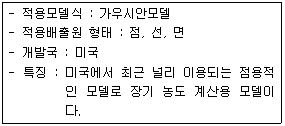
- RAMS
- ISCLT
- UAM
- AUSPLUME
(정답률: 71%)
2과목: 연소공학
21. 다음 기체연료의 일반적인 특징으로 가장 거리가 먼 것은?
- 연소조절, 점화 및 소화가 용이한 편이다.
- 회분이 거의 없어 먼지 발생량이 적다.
- 연료의 예열이 쉽고, 저질연료도 고온을 얻을 수 있다.
- 취급시 위험성이 적고, 설비비가 적게 든다.
(정답률: 79%)
22. 화염으로부터 열을 받으면 가연성 증기가 발생하는 연로로써, 휘발유, 등유, 알콜, 벤젠 등의 액체연료의 연소형태는?
- 증발연소
- 자기연소
- 표면연소
- 발화연소
(정답률: 80%)
23. 액체연료의 연소장치인 유압분무식 버너에 관한 설명으로 가장 거리가 먼 것은?
- 구조가 간단하여 유지 및 보수가 용이하다.
- 대용량 버너 제작이 용이하다
- 유량조절범위가 넓어 부하변동이 용이하다
- 분무각도가 40~90˚ 정도로 크다.
(정답률: 62%)
24. 어떤 2차반응에서 반응물질을 농도를 같게 했을 때 그 10%가 반응하는데 250초 걸렸다면 90% 반응하는데 데는 몇초 걸리는가?
- 18550초
- 20250초
- 24550초
- 28250초
(정답률: 64%)
25. 중유 1kg 속에 H13%, 수분 0.7%가 포함되어 있다. 이 중유의 고위발열량이 5000kcal/kg 일 때 이 중유의 저위발열량 (kcal/kg)은?
- 4126
- 4294
- 4365
- 4926
(정답률: 60%)
26. 유황 함유량이 1.6%(W/W)인 중유를 매시 100통 연소시킬 때 굴뚝으로 부터의 SO3배출량 (Sm/h)은? (단, 유황은 전량이 반응하고 이 중 5%는 SO3로서 배출되며 나머지는 SO2로 배출된다)
- 1120
- 1064
- 136
- 56
(정답률: 41%)
27. 기체연료의 연소방식 중 예혼합연소에 관한 설명으로 옳지 않은 것은?
- 연소기 내부에서 연료와 공기의 혼합비가 변하지 않고 균일하게 연소된다.
- 화염길기가 길고, 그을음이 발생하기 쉽다.
- 역화의 위험이 있어 역화방지기를 부착해야한다.
- 화염온도가 높아 연소부하가 큰 곳에 사용이 가능하다.
(정답률: 72%)
28. 미분탄 연소장치에 관한 설명으로 옳지 않은 것은?
- 설비비와 유지비가 많이 들고 재의 비산이 많아 집진장치가 필요하다.
- 부하변동의 적응이 어려워 대형과 대용량 설비에는 적합지 않다
- 연소제어가 용이하고 점화 및 소화기 손실이 적다.
- 스토우커 연소에 적합하지 않는 점결탄과 저발열량탄등도 사용할 수 있다.
(정답률: 67%)
29. 연소반응에서 가연성물질을 산화시키는 물질로 가장 거리가 먼 것은?
- 산소
- 산화질소
- 유황
- 할로겐계 물질
(정답률: 60%)
30. 화격자 연소 중 상부투입 연소에서 일반적인 구성순서로 가장 적합한 것은? (단, 상부 → 하부)
- 석탄층 → 건조층 → 건류증 → 환원층 → 산화층 → 재층 → 화격자
- 화격자 → 석탄층 → 건류층 → 건조층 → 산화층 → 환원층 → 재층
- 석탄층 → 건류층 → 건조층 → 산화층 → 환원층 → 재층 → 화격자
- 화격자 → 건조층 → 건류층 → 석탄층 → 환원층 → 산화층 → 재층
(정답률: 69%)
31. H2 50%, CH4 25%, CO2 18%, O2 7%로 조성된 기체연료를 이론공기량으로 완전연소 시켰다. 습배출가스 중 CO2의 농도(%)는?
- 10.8%
- 15.4%
- 18.2%
- 21.6%
(정답률: 26%)
32. 다음 각종 가스의 완전연소 시 단위부피당 이론공기량 (Sm3/Sm3)이 가장 큰 가스는?
- ethylene
- methane
- acetylene
- propylene
(정답률: 72%)
33. 유류버너 중 회전식 버너에 관한 설명으로 옳지 않은 것은?
- 연료유의 점도가 작을수록 분무화 입경이 작아진다.
- 분무는 기계적 원심력과 공기를 이용한다.
- 유압식버너에 비하여 연료유의 분무화 입경이 1/10이하로 매우작다
- 분무각도는 40˚~80˚ 정도로 크며, 유량조절범위도 1:5정도로 비교적 큰 편이다.
(정답률: 67%)
34. 고체연료에 관한 설명으로 옳지 않은 것은?
- 갈탄은 휘발분 많기 때문에 착화성이 좋고, 착화온도도 520~720k 정도로 비교적 낮은 편이다.
- 아탄온 순탄 발열량이 낮을 뿐만 아니라 다량의 수분을 포함하고 있어 유효하게 이용할 수 있는 열량이 적다는 결점도 있다.
- 역청탄을 저온 건류해서 얻어지는 반성코크스는 휘발분이 많고 착화성도 좋다.
- 코크스는 석탄에 비해 화력이 약하고 매연이 잘 생기는 결점도 있다.
(정답률: 53%)
35. 모닥불이나 화재 등도 이연소의 일종이며, 고정된 연료괴의 층을 연소용 공기가 통과하면서 연소가 일어나는 것으로 금속격자 위에 연료를 깔고 아래에서 공기를 불어 연소시키는 형태는?
- 확산연소
- 분부화연소
- 화격자연소
- 표면연소
(정답률: 70%)
36. 확산형 가스버너인 포트형 설계시 주의사항으로 옳지 않은 것은?
- 로 내부에서 연소가 완료되도록 가스와 공기의 유속을 결정한다.
- 포트 입구가 작으면 슬래그가 부착해서 막힐 우려가 있다.
- 고발열량 탄화수소를 사용할 경우는 가스압력을 이용하여 노즐로부터 고속으로 분출케 하여 그 힘으로 공기를 흡인하는 방식을 취한다.
- 밀도가 큰 가스 출구는 하부에 밀도가 작은 공기출구는 상부에 배치되도록 하여 양쪽의 밀도차에 의한 혼합이 찰 되도록한다.
(정답률: 74%)
37. 폐타이어를 연료화하는 주된 방식과 가장 거리가 먼 것은?
- 가압문해 증류 방식
- 액화법에 의한 연료추출 방식
- 열분해에 의한 오일추출 방식
- 직접 연소 방식
(정답률: 68%)
38. 연료의 표면적을 넓게 하여 연소방응이 원활하게 이루어 지도록 하는 연소형태와 가장 거리가 먼 것 은?
- 분사연소
- COM(coal oil mixture)연소
- 미분연소
- 층류연소
(정답률: 53%)
39. 오산화이질소 (N2O5)의 분해는 아래와 같이 45˚C에서 속도상수 5.1×10-4s-1인 1차반응 이다. N2O5의 농도가 0.25M에서 0.15M으로 감소되는 데는 약 얼마의 시간이 걸리는가?
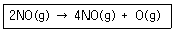
- 5min
- 9min
- 12min
- 17min
(정답률: 44%)
40. 액체연료의 석유의 물성치에 관한 설명으로 옳지 않은 것은?
- 석유류의 증기압이 큰 것은 착화점이 낮아서 위험하다.
- 석유류의 인화점은 휘발유 –50˚C~0˚C, 등유 30˚C~70˚C 중유 90˚C~120˚C 정도이다.
- 석유릐 비중이 커지면 탄화수소비(C/H)rk 증가하고, 발생열량이 감소한다.
- 석유의 동점도가 감소하면 끓는점이 높아지고 유동성이 좋아지며 이로 인하여 인화점이 높아진다.
(정답률: 65%)
3과목: 대기오염 방지기술
41. 온도 20˚C 압력 120kPa의 오염공기가 내경 400mm의 관로내를 질량유속 1.2kg/s로 흐를 때 관내의 유체의 평균유속은? (단, 오염공기의 평균분자량은 29.96이고 이상기체로 취급한다. 1atm = 1.013 × 105 Pa)
- 6.47 m/s
- 7.52 m/s
- 8.23 m/s
- 9.76 m/s
(정답률: 18%)
42. 휘발유 자동차의 배출가스를 감소하기 위해 적용되는 삼원측매 장치의 촉매물질 중 환원 촉매로 사용되고 있는 물질은?
- Pt
- Ni
- Rh
- Pd
(정답률: 66%)
43. 악취물질의 성질과 발생원에 관한 설명으로 가장 거리가 먼 것은?
- 에틸아민 (C2H5NH2)은 암모니아취 물질로 수산가공, 약품 제조시에 발생한다.
- 메틸머캡탄 (CH3SH)은 부패양파취 물질로 석유전제, 가스제조, 약품제조시에 발생한다.
- 황화수소 (HS)는 썩은 계란취 물질로 석유정제, 약품제조시에 발생한다.
- 아크로레인(CHCHCHO)은 생선취 물질로 하수처리장, 축산업에서 발생한다
(정답률: 68%)
44. 광학현미경을 이용하여 입경을 측정하는 방법에서 입자의 투영면적을 이용하여 측정한 입경 중 입자의 투영면적 가장자리에 접하는 가장 긴 선의 길이로 나타내는 것은?
- 등면적 직경
- Feret 직경
- Martin 직경
- Heyhood 직경
(정답률: 70%)
45. 전기집진장치의 특성으로 가장 거리가 먼 것은?
- 소요설치면적이 적고, 전처리 시설이 불필요하다.
- 주어진 조건에 따라 부하변동이 적응이 곤란하다.
- 약 450˚C 전후의 고온가스 처리가 가능하다
- 압력손실이 적어 송풍기 동력비가 적게 든다.
(정답률: 54%)
46. 침강실의 길이 5m인 중력집진장치를 사용하여 침강집진할 수 있는 먼지의 최소입경이 140㎛였다. 이 길이를 2.5배로 변경할 경우 침강실에서 집진가능한 먼지의 최소 입경(㎛) 은? (단, 배출가스의 흐름은 층류이고, 길이 이외의 모든 설계조건은 동일하다)
- 약 70
- 약 89
- 약 99
- 약 129
(정답률: 48%)
47. 다음은 충전탑에 관한 설명이다. ( )안에 가장 적합한 것은?
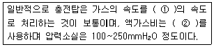
- ① 0.5 ~ 1.5m/sec, ② 0.⑤ ~ 0.1L/m3
- ① 0.5 ~ 1.5m/sec, ② 2 ~ 3L/m3
- ① 5 ~ 10m/sec, ② 0.⑤ ~ 0.1L/m3
- ① 5 ~ 10m/sec, ② 2 ~ 3L/m3
(정답률: 47%)
48. 벤츄리 스크러버에 관한 설명으로 가장 적합한 것은?
- 먼지부하 및 가스유동에 민감하다
- 가압수식 중 압력손실은 매우 큰 반명, 집진율이 낮고 설치 소요면적이 크다
- 액가스비가 커서 소량의 세정액이 요구된다.
- 점착성, 조해성 먼지처리 시 노즐막힘 현상이 현저하여 처리가 어렵다.
(정답률: 50%)
49. 벤젠 소각 시 속도상수 k가 540˚C에서 0.00011/s, 640˚C에서 0.14/s 일 때, 벤젠 소각에 필요한 활성화 에너지(kcal/mol)는? (단, 벤젠의 연소반응은 1차 반응이라 가정하고, 속도상수 k는 다음 Arrhenius 식으로 표현 된다. k = Aexp(-E/RT) )
- 95
- 1⑤
- 115
- 130
(정답률: 53%)
50. 다음 중 활성탄으로 흡착 시 가장 효과가 적은 것은?
- 일산화질소
- 알콜류
- 아세트산
- 담배연기
(정답률: 56%)
51. 높이 2.5m, 폭 4.0m인 중력식 집진장치의 침강실에 바닥을 포함하며 20개의 평행판을 설치하였다. 이 침강실에 점도가 2.078×10-5kg/m·sec인 먼지가스를 2.0m3/sec 유량으로 유입시킬 때 밀도가 1200kg/m3이고, 입경이 40㎛인 먼지입자를 완전히 처리하는데 필요한 침강실의 길이는? (단, 침강실의 흐름은 층류)
- 0.5m
- 1.0m
- 1.5m
- 2.0m
(정답률: 25%)
52. 여과집진장치의 특성으로 옳지 않은 것은?
- 다양한 여과재의 사용으로 인하여 설계시 융통성이 있다.
- 여과재의 교환으로 유지비가 고가이다.
- 수분이나 여과속도에 적응성이 높다.
- 폭발성, 점착성 및 흡습성 먼지의 제거가 곤란하다
(정답률: 63%)
53. 사이클론의 원추부 높이가 1.4m 유입구 높이가 15cm, 원통부 높이가 1.4m 일 때 외부선 회류의 회전수는? (단, N=(1/HA)[HB+(HC/2)
- 6회
- 11회
- 14회
- 18회
(정답률: 59%)
54. A집진장치의 입구와 출구에서 함진가스 중 먼지의 농도를 측정하였더니 각가 15g/Sm3, 0.3g/Sm3이었고, 또 입구와 출구에서 측정한 분진시료 중 0~5의 중량백분율이 각각 10%, 60%이었다면 이 집진장치의 0~5㎛입경범위의 먼지에 대한 부분집진율(%)은?
- 84
- 86
- 88
- 90
(정답률: 54%)
55. 배출가스 중의 염화수소(HCI)의 농도가 150ppm이고 배출허용기준이 40mg/Sm3이라면, 이 배출허용기분지로유지하기 위하여 제거해야 할 HCI은 현재 값의 약 몇%인가? (단, 표준상태기준)
- 72%
- 76%
- 80%
- 84%
(정답률: 41%)
56. 원심력 집진장치의 성능인자에 관한 설명으로 가장 거리가 먼 것은?
- 블로우 다운(blow-down)효과를 적용하면 효율이 높아 진다.
- 내경(배출내관)이 작을수록 입경이 작은 먼지를 제거 할 수 있다.
- 한계(입구)유속 내에서는 유속이 빠를수록 효율이 감소한다.
- 고농도는 병렬로 연결하고 응집성이 강한 먼지는 직렬 연결(단수 3단 한계)하여 주로 사용한다.
(정답률: 46%)
57. 배출가스 중 NO 발생을 저감시킬 수 있는 방법으로 거리가 먼 것은?
- 공기비를 높게 하여 연소시킨다
- 배출가스를 순환시켜 연소시킨다.
- 2단 연소법에 의하여 연소시킨다
- 연소실에 수증기를 주입한다.
(정답률: 60%)
58. 여과집진장치의 탈진방식 중 간헐식에 관한 설명으로 옳지 않은 것은?
- 간헐식 중 진동식은 여포에 음파진동, 횡진동, 상하진동에 의해 포집된 먼지층을 털어내는 방식이다.
- 집진실을 여러 개의 방으로 구분하고 방 하나씩 처리가스의 흐름을 차단하여 순차적으로 탈진하는 방식이며, 여포의 수명은 연속식에 비해 길다.
- 연속식에 비하여 먼지에 배지산이 적고, 높은 집진율을 얻을 수 있다.
- 대량의 가스의 처리에 적합하며, 정성있는 조대먼지의 탈진에 효과적이다.
(정답률: 61%)
59. 환기장치의 요소로서 덕트 내의 동압에 관한 설명으로 옳은 것은?
- 공기밀도에 비례한다.
- 공기유속의 제곱에 반비례한다.
- 속도압과 관계없다
- 액체의 높이로 표시할 수 없다.
(정답률: 50%)
60. 유해가스 종류별 처리제 및 그 생성물과의 연결로 옳지 않은 것은? (순서대로 유해가스, 처리제, 생성물)
- SiF4, H2O, SiO2
- F2, NaOH, NaF
- HF, Ca(OH)2, CaF2
- Cl2, Ca(OH)2, Ca(CIO3)2
(정답률: 60%)
4과목: 대기오염 공정시험기준(방법)
61. 흡광차분광법에서 분석기 내부의 구성장치와 가장 거리가 먼 것은?
- 분광기
- 써프렛서
- 검지부
- 샘플채취부
(정답률: 50%)
62. 연료의 연소로부터 배출되는 굴뚝 배출가스 중 일산화탄소를 정전위전해법으로 분석하고자 할 때 주요 성능기준으로 옳지 않은 것은?
- 90% 응답 시간은 2분 30초 이내로 한다.
- 재현성은 측정범위 최대 눈금값의 ±2% 이내로 한다.
- 측정범위는 최고 5%로 한다.
- 전압 변동에 대한 안정성은 최대 눈금값의 ±1% 이내로 한다.
(정답률: 53%)
63. 환경대기 내의 탄화수소 측정방법 중 총탄화수소 측정법 성능기준으로 옳지 않은 것은?
- 측정범위는 0~10ppmC, 0~25ppmC 또는 0~50ppmC로 하여 1~3단계 (Range)의 변환 이 가능한 것이어야 한다.
- 응답시간은 스팬가스를 도입시켜 측정치가 일정한 값으로 급격히 변화되어 스팬가스 농도의 90% 변화할 때 까지의 시간은 2분 이하여야 한다.
- 제로가스 및 스팬가스를 흘려보냈을 때 정상적인 측정치의 변동은 각 측정단계마다 최대 눈금치의 3%의 범위내에 있어야 한다.
- 제로조정 및 스팬 조정을 끝낸 후 그 중간 농도의 교정용 가스를 주입시켰을 경우에 상당하는 메탄 농도에 대한 지시오차는 각 측정단계마다 최대 눈금치의 5%의 범위내에 있어야 한다.
(정답률: 38%)
64. 원자흡광광도법에서 목적원소에 의한 흡광도 As와 표준원소에 의한 흡광도 AR와의 비를 구하고 As/AR값과 표준물질 농도와의 관계를 그래프에 작성하여 검량선을 만들어 시료 중의 목적원소 농도를 구하는 정량법은?
- 표준 첨가법
- 내부 표준법
- 절대 검량선법
- 검량선법
(정답률: 47%)
65. 다음은 비분산 적외선 분석방법 중 응답시간의 성능기준을 나타낸 것이다. ( )안에 알맞은것은?
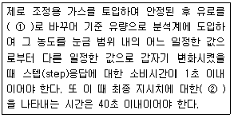
- ① 비교가스, ② 10%의 응답
- ① 스팬가스, ② 10%의 응답
- ① 비교가스, ② 90%의 응답
- ① 스팬가스, ② 90%의 응답
(정답률: 67%)
66. 환경대기 내의 석면 시험방법 중 시료 채위 장치 및 기구에 관한 설명으로 옳지 않은 것은?
- 멤브레인 필터의 광굴절율 : 약 3.5 전후
- 멤브레인 필터의 재질 및 규격 : 셀룰로즈 에스테르제 (또는 셀룰로즈나이트레이제) pore size 0.8~1.2, Φ25mm 또는 Φ47mm
- 흡인펌프 : 1L/min ~ 20L/min로 흡인 가능한 다이아프램 펌프
- Open face형 필터홀더의 재질 : 40mm의 집풍기가 홀더에 장착된 PVC
(정답률: 57%)
67. 환경대기 중의 일산화탄소 측정방법 중 수소영 이온화 검출기법은 시료공기를 몰리큘러 시브(Molecular Sieve)가 채워진 분리관을 통과시켜 분리된 일산화탄소를 메탄으로 환원하여 수소영 이온화 검출기로 정량하는 방법이다. 이때 사용되는 운반가스와 촉매로 가장 적합한 것은?
- 질소과 백금(Pt)
- 수소와 니켈(Ni)
- 헬륨과 팔라듐(Pd)
- 수소와 오스뮴(Os)
(정답률: 52%)
68. 환경대기 중 옥시단트(오존으로서) 측정밥법 중 화학발광 법(자동연속측정법)에 관한 설명으로 옳지 않은 것은?
- 시료대기중에 오존과 에틸렌(Ethylene)가스가 반응할 때 생기는 발광도가 오존농도와 비례관계가 있다는 것을 이용하여 오존농도를 측정한다.
- 이 측정방법이 최저감지농도는 0.⑤ppm이며 방해물질로는 아황산가스에 대해 약산 영향을 받으나 다른 물질에 대하여는 영향을 받지 않는다.
- 측정범위는 원칙적으로 0.5ppm 03로 한다.
- 여과지는 시료대기중에 포함되어 있는 먼지를 제거하고 유로의 막힘을 방지하기 위해 사용하며 테플론을 사용하여 오존이 흡착되는 것을 방지하여 측정초아의 발생을 줄여야 한다.
(정답률: 43%)
69. 배출가스 중 카드뮴 화합물의 농도를 측정하기 위하여 채취한 시료가 다량의 유기물 유리탄소를 함유하고 있었다. 이 시료의 처리방법으로 가장 적합한 것은?
- 염산법
- 질산-염산법
- 저온회화법
- 질산-과산화수소수법
(정답률: 59%)
70. 분석대상가스가 암모니아인 경우 사용가능한 채취관의 재질로 가장 거리가 먼 것은?
- 스테인레스강
- 불소수지
- 석영
- 실리콘수지
(정답률: 44%)
71. 가스크로마토그래프의 장치구성에 관한 설명으로 가장 거리가 먼 것은?
- 방사성 동위원소를 사용하는 검출기를 수용하는 검출기오븐에 대하여는 온도조절기우와는 별도로 독립작용할수 있는 과열방지기루를 설치해야 한다.
- 분리관오븐의 온도조절 정밀도는 ±0.5˚C 범위 이내 전원 전압변동 10%에 대하여 온도변화 ±0.5˚C 범위 이내 (오븐의 온도가 150˚ 부근일 때) 이어야 한다.
- 기록꼐는 스트립 차아트식 수직기록계로 스팬전압 1mV, 펜 응답시간 5초 이내, 기록지 이 동속도는 5mm/분을 포함한 다단변속이 가능한 것이어야 한다.
- 수소염 이온화 검출기 (FID)에서는 직력고저항치, 기록계 스팬전압 또는 기록계 전체눈금에 대한 이온전류치, 기록지 이동속도를 설정, 판독 또는 측정할 수 있는 것이어야 한다.
(정답률: 42%)
72. 기체-액체 크로마토그래프법에 사용되는 고정상액체(Stationary Liquid)의 조건으로 옳은 것은?
- 사용온도에서 증기압이 낮고, 점성이 작은 것이어야 한다.
- 사용온도에서 증기압이 낮고, 점성이 큰 것이어야 한다.
- 사용온도에서 증기압이 높고, 점섬이 작은 것이어야 한다.
- 사용온도에서 증기압이 높고, 점성이 큰 것이어야 한다.
(정답률: 51%)
73. 환경대기 중 가스상 물질의 시료채취방법에서 채취관-여과재-포집부-흡인펌프-유량계(가스미터)의 순으로 시료를 채취하는 방법은?
- 용기 포집법
- 용매포집법
- 직접 포집법
- 포집여지에 의한 방법
(정답률: 56%)
74. 다음 중 대이고염 공정시험기준상 지하공간 및 환경대기 중의 벤조(a)피렌 농도를 측정하기 위한 시험방법으로 가장 적합한 것은?
- 이온크로마토그래피법
- 비분산적외선분석법
- 흡광차분광법
- 형광분광광도법
(정답률: 33%)
75. 흡광광도 분석장치인 광전분광 광도계에서 발생하는 희미하고 약한 불빛인 미광(Stray Light)의 파장역으로 거리가 먼 것은?
- 200~220 nm
- 300~330 nm
- 500~530 nm
- 700~800 nm
(정답률: 45%)
76. 굴뚝 배출가스 중의 수분량 측정을 위해 흡습관에 배출가스를 10L 통과시킨 결과 흡습관의 중량증가는 0.7510g 이었다. 이 때 건식가스미터로 측정하여보니, 게이압이 4mmH2O 이고, 흡인가스 온도가 27˚C였다. 측정당시 대기압이 757mmHg이면 배출가스중의 수분량 (%)은?
- 약 6.5%
- 약 9.3%
- 약 10.2%
- 약 13.6%
(정답률: 31%)
77. 대기환경중에 존재하는 휘발성유기화화물(VOCs) 중 오전생성 전구물질과 유해대기오염물질의 농도를 측정하기 위한 시험방법에 해당하지 않은 것은?(관련 규정 개정전 문제로 여기서는 기존 정답인 3번을 누르면 정답 처리됩니다. 자세한 내용은 해설을 참고하세요.)
- 고체흡착열탈착법
- 자동연속열탈착분석법
- 저온농축탈착법
- 고체흡착용매추출법
(정답률: 51%)
78. 원자흡광광도법에서 사용하는 용어 설명으로 거리가 먼 것은?
- 공명선(Resonance Line) : 원자가 외부로 빛을 반사했다가 방사하는 스펙트럼선
- 근접선(Neighbouring Line) : 목적하는 스펙트럼선에 가까운 파장을 갖는 다른 스펙트럼선
- 역화(Flame Back) : 불꽃의 연소속도가 크고 혼합기체의 분출속도가 작을 때 연소현상이 내부로 옮겨지는 것
- 원자흡광(분광)측광 : 원자흡광스펙트럼을 이용하여 시료중의 특정원소의 농도와 그 휘선의 흡광정도와의 상관관계를 측정하는 것
(정답률: 58%)
79. 다음 중 굴뚝 배출가스 중의 질소산화물을 정량하는 방법은?
- 아르세나조 피법
- 차아염소산염법
- 아세틸아세톤법
- 페놀디술폰산법
(정답률: 48%)
80. 다음 중 디에틸아민동 용액에서 시료가스를 흡수시켜 생성된 디에틸 디티모카바민산동의 흡광도를 435nm의 파장에서 측정하는 항목은?
- CS2
- H2S
- HCN
- PAH
(정답률: 57%)
5과목: 대기환경관계법규
81. 대기환경보전법령상 시·도지사가 사업자로 하여금 측정기기 운영·관리기준을 지키지아니 하여 조치명령을 하는 경우에 정하는 개선기간의 최대범위는? (단, 연장기간 제외)
- 3개월 이내
- 6개월이내
- 9개월이내
- 12개월이내
(정답률: 50%)
82. 대기환경보전법규상 정밀검사대상 자동차 및 정밀검사 유효기간 기준의 차령 4년 경과된 “비사업용 승용자동차”의 정밀검사 유효기간은? (단 해당자동차는 자동차관리법에 따른다.)
- 1년
- 2년
- 3년
- 5년
(정답률: 47%)
83. 다중이용시설 등의 실내공기질 관리법규상 보육시설 내부의 쾌적한 공기질을 유지하기 위한 실내공기질 유지기준이 설정된 오염물질이 아닌 것은?
- 미세먼지
- 폼알데하이드
- 아산화질소
- 총부유세균
(정답률: 53%)
84. 대기환경보전법령상 기본부과금의 지역별부과계수로 옳게 연결된 것은?(단, 지역구분은 「국토의 계획 및 이용에 관한 법률」에 따르고 대표적으로 Ⅰ지역은 주거지역, Ⅱ지역은 공업지역, Ⅲ지역은 녹지지역이 해당한다.)
- Ⅰ지역-0.5, Ⅱ지역-1.0, Ⅲ지역-1.0
- Ⅰ지역-1.5, Ⅱ지역-0.5, Ⅲ지역-1.0
- Ⅰ지역-1.0, Ⅱ지역-0.5, Ⅲ지역-1.5
- Ⅰ지역-1.5, Ⅱ지역-1.0, Ⅲ지역-0.5
(정답률: 55%)
85. 대기환경보전법규상 위임업무의 보고횟수 기준이 “수시”에 해당되는 업무내용은?
- 환경오염사고 발생 및 조치사항
- 자동자 연료 및 첨가제의 제조 · 판매 또는 사용에 대한 규제현황
- 첨가제의 제조기준 적합여부 검사현황
- 수입자동차 배출가스 인증 및 검사현황
(정답률: 57%)
86. 다음은 환경정책기본법상 용어의 뜻 이다. ( )안에 알맞은 것은?
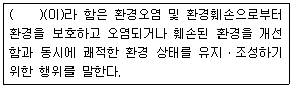
- 환경복원
- 환경정화
- 환경개선
- 환경보전
(정답률: 53%)
87. 대기환경보전법규상 배출시설별 대기오염물질 발생량 산정방법이 있어 계산항목에 해당하지 않는 것은?
- 배출시설의 시간당 대기오염물질 발생량
- 일일조업시간
- 배출허용기준 초과횟수
- 연간가동일수
(정답률: 38%)
88. 대기환경보전법령상 초과부과금 산정기준 중 오염물질과 그 오염물질 1kg당 부과금액(원)의 연결로 모두 옳은 것은?
- 황산화물 – 500, 암모니아 – 1400
- 먼지 – 6000, 이황화탄소 – 2300
- 불소화합물 – 7400, 시안화수소 – 7300
- 염소 – 7400, 염화수소 – 1600
(정답률: 47%)
89. 대기환경보전 법규상 자동차 종류 구분기준 중 전기만을 동력으로 사용하는 자동차로서 1회 충전 주행거리가 80km이상 160km미만에 해당하는 것은?
- 제1종
- 제2종
- 제3종
- 제4종
(정답률: 58%)
90. 대기환경보전법규상 휘발유 이륜자동차의 배출가스 보증기간 적용기준으로 옳은 것은?(관련 규정 개정전 문제로 여기서는 기존 정답인 2번을 누르면 정답 처리됩니다. 자세한 내용은 해설을 참고하세요.)
- 1년 또는 5,000km
- 2년 또는 10,000km
- 6년 또는 100,000km
- 7년 또는 500,000km
(정답률: 54%)
91. 다음은 악취방지법규상 악취검사기관의 준수사항이다. ( )안에 알맞은 것은?
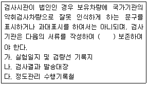
- 1년간
- 2년간
- 3년간
- 5년간
(정답률: 49%)
92. 대기환경보전법령상 황함유기준에 부적합한 유류를 판매하여 그 해당 유류의 회수처리명령을 받은 자는 시·도지사 등에게 그 명령을 받은 날부터 며칠 이내에 이행완료보고서를 제출 하여야 하는가?
- 5일 이내에
- 7일 이내에
- 10일 이내에
- 30일 이내에
(정답률: 40%)
93. 대기환경보전법상 시·도지사가 사업자에게 대기오염물질 배출허용기준 초과 등에 따른 배출 부과금 부과시 반드시 고려해야 할 사항으로 가장 거리가 먼 것은?(단, 그 밖의 사항 등은 고려하지 않음)
- 대기오염물질의 배출량
- 자가측정을 하였는지 여부
- 대기오염물질의 배출기간
- 대기오염물질의 독성여부
(정답률: 44%)
94. 대기환경보전법령상 “자동차 사용의 제한 명령 및 사업장의 연료사용량 감축 권고” 등의 조치사항에 해당하는 대기오염 경보단계는?
- 경계 발령
- 주의보 발령
- 경보 발령
- 중대경보 발령
(정답률: 43%)
95. 다음은 대기환경보전볍규상 첨가제ㆍ촉매제 제조기준에 맞는 제품의 표시방법이다. ( )안에 알맞은 것은?
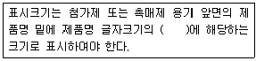
- 100분의 30이상
- 100분의 25이상
- 100분의 15이상
- 100분의 10이상
(정답률: 56%)
96. 대기환경보전법령상 3종 사업장의 환경기술인의 자격기준에 해당되는 자는?
- 환경기능사
- 1년 이상 대기분야 환경관련 업무에 종사한 자
- 2년 이상 대기분야 환경관련 업무에 종사한 자
- 피고용인 중에서 임명하는 자
(정답률: 56%)
97. 대기환경보전법상 배출시설을 가동할 때에 방지시설을 가동하지 아니하거나 오염도를 낮추기 위하여 배출시설에서 나오는 오염물질에 공기를 섞어 배출하는 행위를 한 자에 대한 벌칙 기준은?
- 7년 이하의 징역이나 1억원 이하의 벌금에 처한다
- 5년 이하의 징역이나 3천만원 이하의 벌금에 처한다
- 1년 이하의 징력이나 500만원 이하의 벌금에 처한다.
- 300만원 이하의 벌금에 처한다.
(정답률: 37%)
98. 다음은 대기환경보전법상 환경기술인에 관한 사항이다. ( )안에 알맞은 것은?
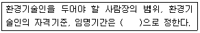
- 시, 도지사령
- 총리령
- 환경부령
- 대통령령
(정답률: 40%)
99. 대기환경보전법에서 사용하는 용어의 뜻으로 옳지 않은 것은?
- “휘발성유기화홥물”이란 탄화수소류 중 석휴화학제품 유기용제, 그밖의 물질로서 환경부장관이 관계 중앙행정기관의 장과 협의하여 고시하는 것을 말한다.
- “저공해엔진” 이란 자동차에서 배출되는 대기오염물질을 줄이기 위한 엔진(엔진 개조에 사용하는 부품을 포함한다) 으로서 환경부령으로 정하는 배출허용기준에 맞는 엔진을 말한다.
- “촉매제”란 배출가스를 줄이는 효과를 높이기 위하여 배출가스저감장치를 제외한 장치에 사용되는 화학물질로서 환경부장관이 관계 중앙행정기관의 장과 협의하여 고시하는 것을 말한다.
- “검댕”이란 연소할 때에 생기는 유리 탄소가 응결하여 입자의 지름이 1미크론 이상이 되는 입자상물질을 말한다.
(정답률: 50%)
100. 대기환경보전법상 대기환경규제지역을 관할하는 시·도지사 등은 그 지역이 대기환경규제지역으로 지정·고시된 후 몇 년 이내에 그 지역의 환경기준을 달성·유지하기 위한 계획을 수립·시행하여야 하는가?
- 5년 이내에
- 3년 이내에
- 2년 이내에
- 1년 이내에
(정답률: 30%)